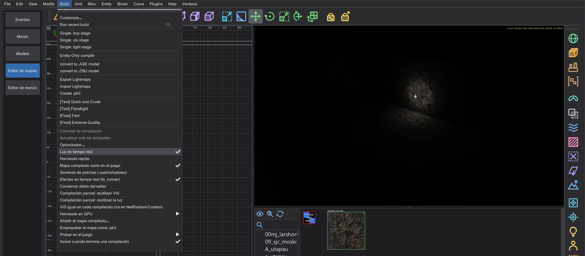
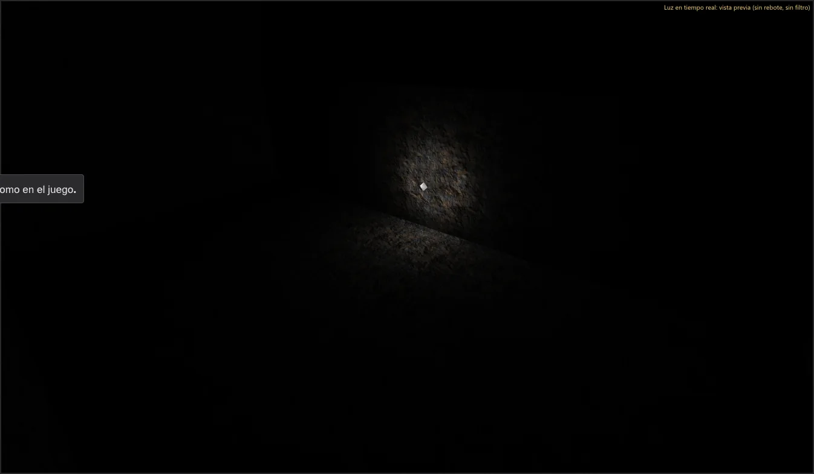
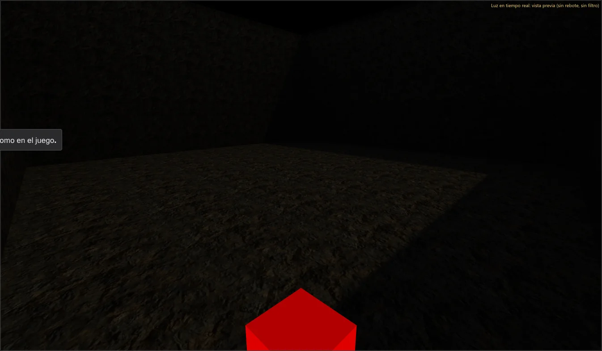
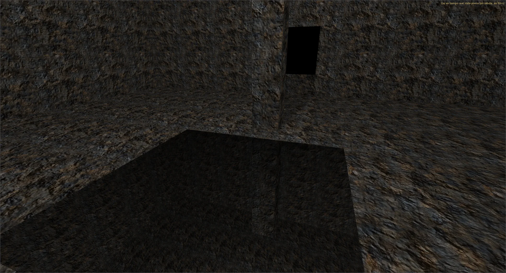
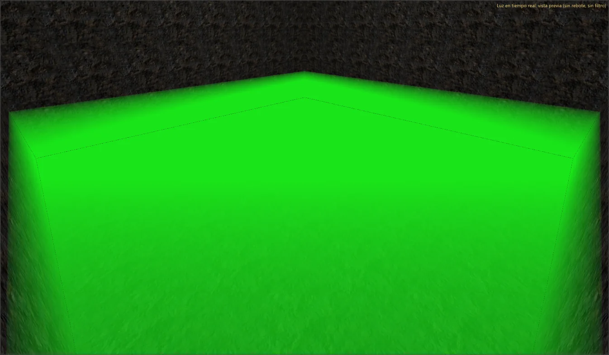
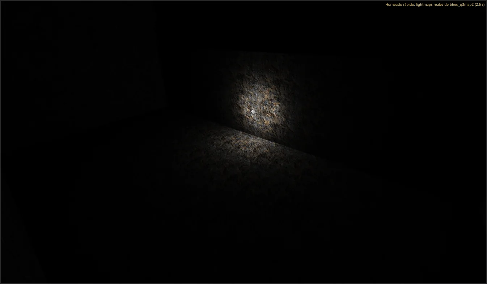

Editor de mapas: velocidad y luz en tiempo real
Mira la luz mientras construyes: Luz en tiempo real ilumina la cámara en la tarjeta gráfica, Horneado rápido compila el mapa en segundo plano y muestra los lightmaps reales. Compilar y editar se volvió más rápido, con el mismo resultado que antes.
Luz en tiempo real#

- 1
Activa Build > Luz en tiempo real. La cámara (modo de render texturizado) se ilumina con las luces del mapa (luces puntuales, focos, el sol del shader del cielo (
q3map_sun) y las luces de superficie (q3map_surfacelight)) con las fórmulas de q3map2 -light y con sombras. - 2
Mueve una luz o cambia sus claves: la cámara lo sigue enseguida. Hasta 512 luces iluminan cada fotograma (cada luz cuyo alcance toca la imagen, la más fuerte primero, también lejos); las 128 más importantes proyectan sombras, el resto ilumina sin sombra.

Luz en tiempo real como en el juego#
La vista previa sigue las reglas de q3map2 -light -fast, para que la imagen coincida con los lightmaps horneados (el mapa de prueba de un mapper real de JKA fue la referencia):
- Cielo y sol: el rayo hacia el sol termina en el cielo, como en q3map2; el propio brush del cielo (caulk en sus otras caras, una tapa encima) ya no hace sombra al sol. Cuentan
sun,q3map_sun,q3map_sunExtyq3map_skyLight(muchos soles débiles por el cielo); el sol tiene dos cascadas de sombra (todo el mapa, alrededor de la cámara). - Luz de superficie:
q3map_surfacelightpor triángulo, dividido porq3map_lightSubdivide, con el factor de forma exacto y el backsplash (q3map_backsplash); el color deq3map_lightRGBoq3map_lightImage. - Lo que proyecta sombras: solo lo que proyecta sombras en q3map2: brushes del mundo y func_group (otras entidades solo con
_castShadows), ninguna superficie nodraw, shaders transparentes solo conalphashadow, patches solo con Build > Sombras de patches (-patchshadows) (también se pasa al horneado rápido). Las caras traseras entran en los mapas de sombras, así la luz de fuera ya no se cuela dentro. - Modelos y patches: las entidades misc_model proyectan sombras como en q3map2 (en el mundo siempre; si no, solo con
_castShadows;_castShadows 0lo desactiva) y sus superficies conq3map_surfacelightbrillan por triángulo; los patches brillan con la misma teselación que en -light. Las caras de los brushes brillan con los triángulos de-meta;q3map_sunExtcon desviación y muestras y las luces con_samplesreciben sus copias desplazadas con la propia secuencia aleatoria de q3map2. - Como en el juego: con la luz en tiempo real (y con el horneado rápido mostrado) desaparecen las superficies nodraw como el caulk, y los shaders transparentes se dibujan con el alphaFunc y el blendFunc de su primera etapa.
Luz a través de patches: los patches solo proyectan sombras con Build > Sombras de patches (-patchshadows), como en q3map2, donde solo proyectan sombras con -patchshadows. El interruptor se guarda en el mapa (worldspawn _bhed_patchshadows) y vale para la luz en tiempo real, el horneado rápido y cada compilación completa: el paso de luz de cualquier entrada del menú Build recibe -patchshadows. Desactivado, las entradas predeterminadas se comportan como en NetRadiant: solo [Final] tiene -patchshadows, las demás dejan pasar la luz a través de los patches, y la ventana de compilación lo avisa. La rejilla de luz ignora siempre los patches (q3map2), así que en el juego los modelos bajo un patch siguen iluminados.
![Compilado con [Test] Quick and Crude, Sombras de patches (-patchshadows) desactivado: la luz atraviesa el patch curvo, como en q3map2.](../bilder/en/h_patchlicht_aus.webp)


Mapa compilado como en el juego#
Build > Mapa compilado como en el juego (activado por defecto) muestra el resultado de la compilación como lo muestra el juego: tras Horneado rápido, o con un .bsp de plantilla, la cámara dibuja el mapa compilado con el mismo renderizador que la vista previa de la pestaña Misión: todas las etapas de los shaders con tcGen, rgbGen, tcMod y mezcla, la caja de cielo, el brillo, la niebla, la gamma del juego y solo lo que el juego dibuja desde el lugar de la cámara (PVS). La luz sale de los lightmaps exactamente como en el juego (lightmap por 1; antes el editor la duplicaba). La selección, los tiradores y las líneas quedan encima como antes.
Niebla, efectos y portal de cielo#
- Niebla: los brushes con un shader
fogParmsy la niebla global de worldspawn (_fog) se dibujan como los dibuja el juego (RB_FogPass con R_FogFactor): el color y la distancia hasta la opacidad, del shader; la superficie de la niebla, de la cara visible del brush (oq3map_fogDir); cuanto más hondo por debajo, más densa. - Efectos: las entidades fx_runner reproducen su efecto con el sistema de efectos de la vista previa de cinemáticas: intervalo de repetición
delay/random, dirección hacia eltarget(oangle; si no, hacia arriba); START_OFF y ONESHOT esperan un use. Build > Efectos en tiempo real (fx_runner) los desactiva. El editor no tiene .bsp, así que las partículas no rebotan en las paredes. - Decals: las marcas de impacto y de quemadura de los efectos caen en las caras que marcaría el juego: como q3map2, el editor construye el mundo del mapa con su árbol BSP - solo la parte visible de cada cara de brush, los modelos de
misc_modelintegrados en el mundo, y solo las caras junto a una hoja abierta del árbol (ninguna marca en el suelo oculto bajo un escalón). En un mapa grande esto tarda unos segundos, como una compilación; se hace en segundo plano y, hasta que termina, cuenta el último mundo. Las caras cuyo shader mueve sus vértices (deformVertexes move) cuentan en toda la caja del movimiento, como las ordena q3map2 en el árbol. - Con
-meta(el valor predeterminado del menú Build) q3map2 vuelve a componer las caras; el editor hace lo mismo y se guía por el paso BSP de la última entrada compilada del menú Build, también por-np,-maxarea,-patchmetay-nofog. Como q3map2, corta las caras en los brushes de niebla, añade las copias deq3map_cloneShaderyq3map_backShadery proyecta las entidades_decalsobre el mundo. Una marca solo toma las primeras 64 caras de su caja, las mismas que en el juego. - Portal de cielo: con un misc_skyportal el cielo muestra la escena desde el lugar del portal, con la misma vista y el mismo campo de visión, como en el juego (CG_DrawSkyBoxPortal).
- Espejos y cámaras de portal: una cara con un shader
portalcon al menos una etapa (por ejemplo textures/system/mirror_yavin; un shader sin ninguna etapa, como textures/system/mirror1, no es un portal en el juego) y un misc_portal_surface a 64 unidades como máximo de su plano es un espejo; si el misc_portal_surface apunta a una misc_portal_camera, la cara muestra la vista de esa cámara (textures/system/portal se vuelve negra más allá del alcance dealphaGen portal). La luz en tiempo real y Mapa compilado como en el juego los dibujan como el juego y la vista previa de la pestaña Misión (R_MirrorViewBySurface): una vista por imagen, la primera cara en el orden que está en pantalla y mira a la cámara. Al mover el misc_portal_surface o la cámara, o al asignar el shader, la vista cambia en la imagen siguiente.


Horneado rápido#
- 1
Activa Build > Horneado rápido. Dos segundos después del último cambio, bhed_q3map2 compila el mapa en una carpeta temporal (
-meta,-vis -fast(si el mapa no tiene fugas) y-light -fast) con prioridad baja, así el editor sigue fluido. - 2
Cuando termina, la cámara muestra los lightmaps reales de esta compilación; arriba a la derecha dice Horneado rápido: lightmaps reales de bhed_q3map2 ( s). Cualquier cambio cancela una compilación en curso y empieza una nueva tras la pausa. Tu mapa y un .bsp junto a él no se tocan.

El horneado rápido escribe los mismos lightmaps, rejilla de luz y visibilidad que bhed_q3map2 en la línea de comandos con las mismas opciones; el autotest compara los archivos. Es más rápido que una compilación completa por -fast y la falta de pasadas de rebote; para la compilación final usa el menú Build.
Qué se volvió más rápido#
Cada cambio se midió antes y después (mediana de tres ejecuciones, prioridad baja, los mismos mapas) y da el mismo resultado: el .bsp de -bsp y -light es byte a byte el de una compilación de 1 hilo de la etapa 6, y los mapas guardados son idénticos.
- -light usa todos los núcleos para los lightmaps (luz a luz en bloques, el supermuestreo adaptativo predicho y comprobado exactamente) y para la rejilla de luz.
- -bsp: la corrección de uniones en T busca en paralelo y aplica en orden; encontrar puntos iguales de la rejilla de luz usa cubetas en vez de buscar entre todos los puntos.
- -vis se queda como en NetRadiant-Custom: con varios hilos puede diferir un poco de una compilación a otra, con
-threads 1siempre es igual. Se probaron y midieron dos formas de hacerlo igual con varios hilos; las dos eran más lentas. - Editor: invertir la selección, la prueba de selección de las vistas y los archivos de NPC del optimizador (leídos en segundo plano).
| Paso | Mapa | NetRadiant-Custom | antes (etapa 6) | ahora |
|---|---|---|---|---|
| BSP (todos los hilos) | duel_pit | 0,20 s | 0,20 s | 0,20 s |
| VIS (todos los hilos) | duel_pit | 0,15 s | 0,10 s | 0,10 s |
| LIGHT (todos los hilos) | duel_pit | 0,66 s | 0,66 s | 0,61 s |
| BSP (1 hilo) | duel_pit | 0,20 s | 0,20 s | 0,20 s |
| VIS (1 hilo) | duel_pit | 0,15 s | 0,15 s | 0,15 s |
| LIGHT (1 hilo) | duel_pit | 3,02 s | 3,33 s | 3,08 s |
| BSP (todos los hilos) | mp__duel1 | 0,36 s | 0,31 s | 0,31 s |
| VIS (todos los hilos) | mp__duel1 | 0,15 s | 0,11 s | 0,10 s |
| LIGHT (todos los hilos) | mp__duel1 | 2,53 s | 2,99 s | 1,92 s |
| BSP (1 hilo) | mp__duel1 | 0,35 s | 0,31 s | 0,31 s |
| VIS (1 hilo) | mp__duel1 | 0,20 s | 0,15 s | 0,16 s |
| LIGHT (1 hilo) | mp__duel1 | 8,72 s | 9,68 s | 9,63 s |
| BSP (todos los hilos) | t1_inter | 0,31 s | 0,26 s | 0,26 s |
| VIS (todos los hilos) | t1_inter | 0,15 s | 0,10 s | 0,10 s |
| LIGHT (todos los hilos) | t1_inter | 0,31 s | 0,26 s | 0,31 s |
| BSP (1 hilo) | t1_inter | 0,30 s | 0,25 s | 0,26 s |
| VIS (1 hilo) | t1_inter | 0,15 s | 0,11 s | 0,10 s |
| LIGHT (1 hilo) | t1_inter | 0,31 s | 0,31 s | 0,31 s |
| BSP (todos los hilos) | md_ch_ben | 0,81 s | 0,71 s | 0,76 s |
| VIS (todos los hilos) | md_ch_ben | 2,77 s | 2,27 s | 2,23 s |
| LIGHT (todos los hilos) | md_ch_ben | 3,73 s | 4,24 s | 2,58 s |
| BSP (1 hilo) | md_ch_ben | 0,86 s | 0,71 s | 0,71 s |
| VIS (1 hilo) | md_ch_ben | 30,53 s | 24,90 s | 24,60 s |
| LIGHT (1 hilo) | md_ch_ben | 12,66 s | 12,65 s | 12,76 s |
| BSP (todos los hilos) | kejim_post | 4,74 s | 4,59 s | 4,14 s |
| VIS (todos los hilos) | kejim_post | 745,40 s | 621,47 s | 573,70 s |
| LIGHT (todos los hilos) | kejim_post | 9,18 s | 10,28 s | 7,21 s |
| BSP (todos los hilos) | duel_mos_espa | 53,35 s | 44,86 s | 19,57 s |
| Paso | Mapa | antes (etapa 6) | ahora |
|---|---|---|---|
| Invert Selection (seleccionar todo) | duel_mos_espa | 29,74 s | 5,2 ms |
| Invert Selection (seleccionar todo) | kejim_post | 1,34 s | 0,7 ms |
| Invert Selection (seleccionar todo) | md_am_sith | 1,36 s | 0,8 ms |
| Abrir .bsp (descompilar) | duel_mos_espa | 7,71 s | 7,98 s |
| Abrir .bsp (descompilar) | kejim_post | 2,01 s | 2,64 s |
| Abrir .bsp (descompilar) | md_am_sith | 3,29 s | 3,42 s |
| Cargar .map | duel_mos_espa | 1,31 s | 1,29 s |
| Cargar .map | kejim_post | 662,5 ms | 717,4 ms |
| Cargar .map | md_am_sith | 805,6 ms | 827,7 ms |
| Texturas cargadas | duel_mos_espa | 1,64 s | 1,80 s |
| Texturas cargadas | kejim_post | 4,2 ms | 821,6 ms |
| Texturas cargadas | md_am_sith | 1,93 s | 2,16 s |
| Guardar .map | duel_mos_espa | 815,8 ms | 745,4 ms |
| Guardar .map | kejim_post | 142,5 ms | 173,7 ms |
| Guardar .map | md_am_sith | 175,9 ms | 189,6 ms |
| Mover todo | duel_mos_espa | 285,1 ms | 329,4 ms |
| Mover todo | kejim_post | 53,2 ms | 72,0 ms |
| Mover todo | md_am_sith | 62,9 ms | 68,0 ms |
| Deshacer el movimiento | duel_mos_espa | 294,1 ms | 353,0 ms |
| Deshacer el movimiento | kejim_post | 26,2 ms | 36,4 ms |
| Deshacer el movimiento | md_am_sith | 33,3 ms | 32,6 ms |
| Deshacer CSG Subtract | duel_mos_espa | 171,1 ms | 207,4 ms |
| Deshacer CSG Subtract | kejim_post | 8,6 ms | 7,9 ms |
| Deshacer CSG Subtract | md_am_sith | 12,1 ms | 10,1 ms |
| Inicio del optimizador | duel_mos_espa | 48,6 ms | 39,2 ms |
| Inicio del optimizador | kejim_post | 10,2 ms | 13,1 ms |
| Inicio del optimizador | md_am_sith | 14,7 ms | 11,8 ms |
| Comprobación del optimizador | duel_mos_espa | 1,47 s | 1,34 s |
| Comprobación del optimizador | kejim_post | 162,4 ms | 201,8 ms |
| Comprobación del optimizador | md_am_sith | 303,7 ms | 257,4 ms |
| Cambiar al editor de mapas hasta que los datos del juego estén listos | - | 273,3 ms | 258,1 ms |
| Vista previa: preparar la escena (md_am_sith) | - | 1,44 s | 1,40 s |
| Vista previa: tiempo por fotograma, escena (media) | - | 15,0 ms | 15,0 ms |
| Vista previa: tiempo por fotograma, vuelo libre (media) | - | 8,2 ms | 8,1 ms |
"Texturas cargadas" de kejim_post era antes tan rápido solo porque la etapa 6 cargó Jedi Outcast sin sus carpetas en esa ejecución (0 shaders, cada cara con la imagen de sustitución; el error corregido en la etapa 7); ahora se cargan los 1187 shaders y sus imágenes. Los pasos que no se cambiaron varían alrededor de un 20 % entre ejecuciones.